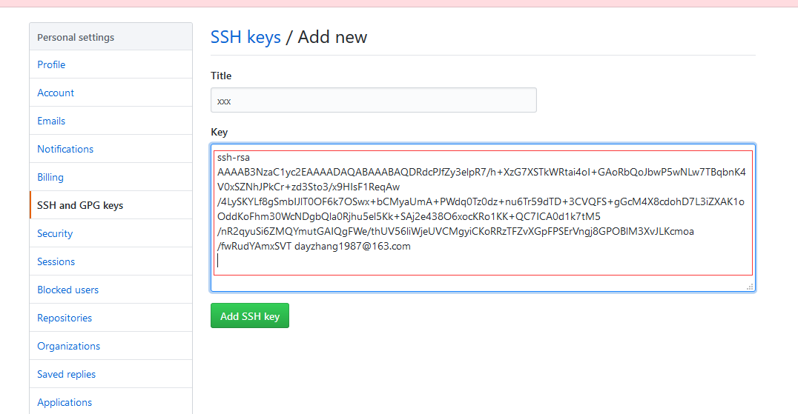

Git是分布式版本控制系统，同一个Git仓库，可以分布到不同的机器上。
1 注册Github账号
- 由于本地Git仓库和Github仓库之间传送是通过SSH加密的，需要以下设置：
ssh-keygen -t rsa C 'email@example.com' 一路回车，默认配置，会在用户主目录生成.ssh目录，包含id_rsa(私钥)和id_rsa.pub(公钥，可公开)。
2 登陆GitHub
打开 settings -》SSH Keys -》'Add SSH Key'，填上title，在Key中粘贴id_rsa.pub内容

可以允许推送多个Key
3 同步本地库和远程库
登陆Github，‘new’，创建一个新的仓库
Repository name填入learngit，点击‘Create',成功创建
目前，在GitHub上的这个learngit仓库还是空的，GitHub告诉我们，可以从这个仓库克隆出新的仓库，也可以把一个已有的本地仓库与之关联，然后，把本地仓库的内容推送到GitHub仓库。 在本地learngit仓库下运行命令：
$ git remote add origin git@github.com:dayzhang1987/learngit.git
添加后，远程库的名字就是origin，这是Git默认的叫法，也可以改成别的，但是origin这个名字一看就知道是远程库
下一步，就可以把本地库的所有内容推送到远程库上:
git push -u origin master
此时本地和远程的库就相同了,后续只要本地做了提交，就可以通过以下命令推送给远程库
git push origin master